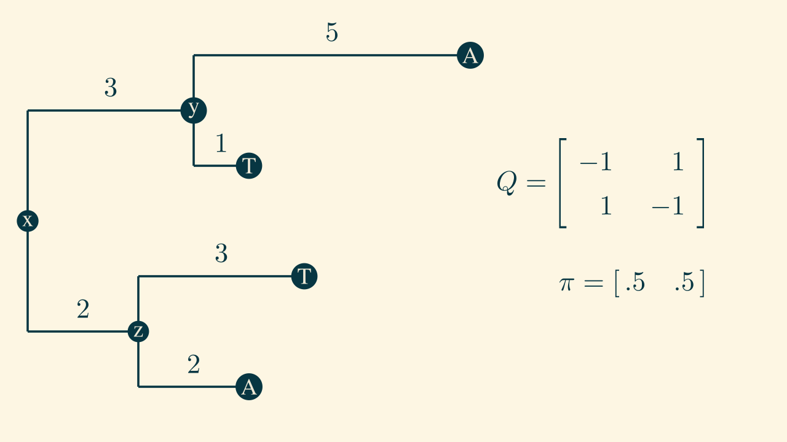

Phylogenetics II
Maximum likelihood and tree topologies
Public Health Modeling Unit
2025-08-12
Barney Isaksen Potter
Series overview
- Trees, tree likelihoods, and models of evolution
- Rate heterogeneity and maximum likelihood
- Bayesian phylogenetics, Markov chain Monte Carlo, and summary trees
- Phylogeography and Kingman's coalescent
We will move rate heterogeneity to the final session
Textbooks
Exercise 1:

solutionKind of sucks, doesn't it?
Felsenstein's pruning algorithm
Felsenstein's pruning algorithm
Felsenstein's pruning algorithm
Felsenstein's pruning algorithm
Felsenstein's pruning algorithm
Felsenstein's pruning algorithm
Now we will pivot into inferring phylogenies
From now on we will be using log-likelihoods instead of regular likelihoods
- Extremely small numbers can cause numerical errors because floating point arithmetic treats them as zeroes
- Adding a bunch of negative numbers is far easier than multiplying a bunch of extremely small numbers
Recall: Substitution models
HKY: Hasegawa, Kishino, and Yano (1985)

Maximum likelihood (evol. rate)
Maximum likelihood (evol. rate)
Maximum likelihood (evol. rate)
Maximum likelihood (evol. rate)
Maximum likelihood (evol. rate)
Maximum likelihood (evol. rate)
Maximum likelihood (evol. rate)
What might we try to modify to get a more likely tree?
- Evolutionary rate ($\mu$)
- Substitution model parameters (e.g. $\kappa$)
- Equlibrium base frequencies ($\pi$)
- Branch lengths
- Tree topology
Tree topologies
Tree topologies
Tree topologies
Tree topologies
Tree topologies
Tree topologies
How can we modify trees?
Prune and regraft
Prune and regraft
Prune and regraft
Prune and regraft
Exercise 2
On a piece of paper, draw all rooted, bifurcating tree topologies with five taxa.
Bonus: do it for six taxa
Check out phyloseminar!
- phyloseminar.org
- Primers: 76-79 by Paul Lewis (UConn)